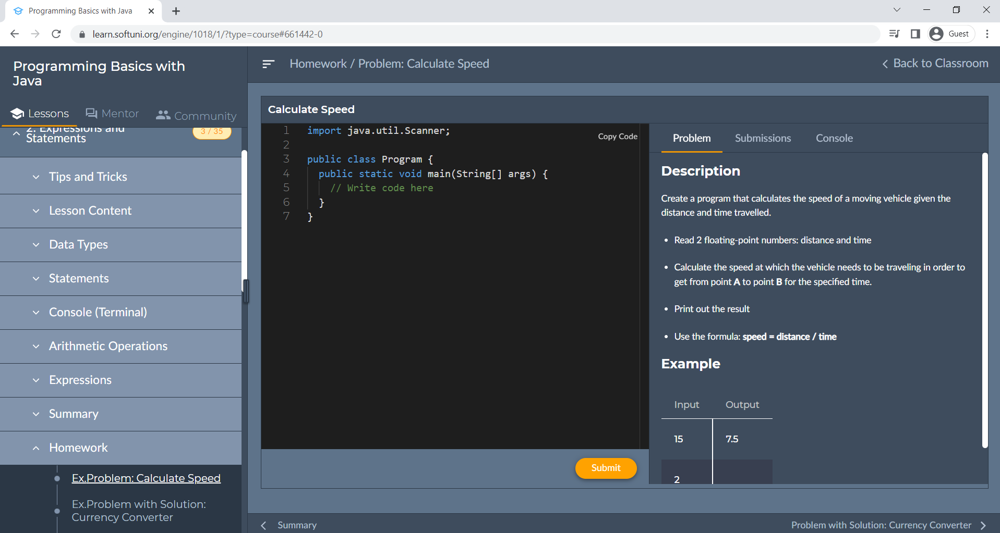

Preface
The book Programming Basics with Java introduces the readers to writing programming code at a beginners level (basic coding skills), working with the development environment (IDE), using variables and data, operators and expressions, working with the console (reading input data and printing output), using conditional statements (if, if-else, switch-case), loops (for, while, do-while, foreach) and methods (declaring and calling methods, passing parameters, and returning values). This book teaches basic coding skills, using the programming language Java and the development environment IntelliJ IDEA. The learning material covered in this book delivers the basic training that is needed for a furthermore in-depth study of programming and prepares the reader for the practical exam at SoftUni.
| This book only gives you the first steps to programming. It covers basic skills that you must develop for years, to reach a high enough level and start working as a programmer. |
The book is used as an unofficial textbook for school-level programming courses: in the high schools, studying professions like Programmer, Application Programmer and System Programmer, as well as an additional teaching tool in the initial programming courses at the secondary schools, mathematical and professional high schools.
Who is This Book Intended for?
This book is suitable for absolute beginners in programming who want to try what programming is and learn the basic constructions for writing program code used in software development, regardless of the programming language and the technologies used. The book gives a solid basis of practical skills that you can use in any future training in programming and software development.
Why Did We Choose Java?
For this book, we choose the Java because it is a modern programming language for high-level programming, open-source, easy to learn, and suitable for beginners. Using Java is widespread, with a well-developed ecosystem, numerous libraries and technology frameworks, and accordingly, it gives many perspectives for development. Java combines paradigms of procedural, object-oriented, and functional programming in a modern way with easy syntax although it is more descriptive than Python and JavaScript. In this book, we will use Java language and IntelliJ IDEA development environment, which are available for free.
As we will explain more about later, the programming language you start with does not make a significant difference in the process of learning to code, but you still need to choose one. For this book, we will focus specifically on Java. You can find the principles and concepts explained here illustrated with other programming languages like C#, Python, and JavaScript
The Book in Other Programming Languages: Java, JavaScript, Python, C++
This book on programming for beginners is available in several programming languages (or is in the process of being adapted for them):
- Programming Basics with JavaScript (English)
- Programming Basics with Python (English)
- Programming Basics with C# (English)
- Programming Basics with Java (English)
- Programming Basics with JavaScript (Bulgarian)
- Programming Basics with Python (Bulgarian)
- Programming Basics with C# (Bulgarian)
- Programming Basics with Java (Bulgarian)
- Programming Basics with C++ (Bulgarian)
If you prefer a different language, select it from the list above.
Programming is Learned by a Lot of Writing, Not Reading!
If someone assumes they will learn to program by just reading a book, without writing code and solving problems, they are deluding themselves. Programming needs a lot of practice, with code writing every day and solving hundreds, even thousands of problems, seriously and persistently for years.
You need to: solve a lot of problems, to make mistakes, to fix, to search for solutions and information from the Internet, to try, to experiment, to find better solutions, to get used to the code, syntax, the programming language, the development environment, to search for errors and debugging the broken code, the algorithmic thinking, breaking the problems into smaller parts, gaining experience and raising your skills every day, because when you learn to write code, this is only the first step to the profession of the "software engineer". You have a lot to learn!
We advise the reader, as a minimum, to try out all the examples from the book, to play with them, to change them, and test them. Even more important than the examples are the exercises because they develop the programmer's practical skills. This book provides nearly 150 practical coding exercises, so it is a good foundation for developing coding and algorithmic thinking skills.
You need to solve all the problems in the book because programming is learned with practice! The exercises after each topic are carefully selected to cover in-depth the learning material. The purpose of solving all the problems is to provide complete set of skills for writing programming code at a beginners level (which is the purpose of this book).
</tr></table>
| Solve all the exercises in the book. Otherwise you won't learn anything! Programming is learned by writing a lot of code and solving thousands of problems! |
About Software University (SoftUni)
The Software University (SoftUni) is the largest training center for software engineers in South-Eastern Europe. Tens of thousands of students pass through the university every year. SoftUni was founded in 2014 as a continuation of the hard work of Dr. Svetlin Nakov in training skillful software engineering professionals by a practical, contemporary and high-quality education that combines fundamental knowledge with modern software technologies and a lot of practice.
SoftUni: High-quality Practical Tech Education
The Software University provides quality education, profession, job and diploma for programmers, software engineers and IT professionals. SoftUni builds an extremely successful and strong connection between education and industry by collaborating with hundreds of software companies, provides job and internships of its students, creates quality professionals for the software industry, and directly responds to the needs of employers via the training process. Learn more at https://softuni.org.
The SoftUni Interactive Classroom
SoftUni’s self-paced programs teach software developers worldwide in the innovative Interactive Classroom that combines video lessons, coding sessions, examples, and exercises in a single platform on the Web.
Using the SoftUni Interactive Platform, you write, execute and test code directly into the browser and your exercise solutions are automatically evaluated by the integrated Judge system. If you have difficulties with an assignment, you can get assistance in multiple ways: with automated hints and guidelines or through SoftUni’s help center. Try it at https://softuni.org.
This is how the SoftUni Interactive Classroom looks like:


Video: SoftUni and SoftUni Judge
Watch a video lesson about SoftUni and SoftUni Judge here: https://www.youtube.com/watch?v=IwLET8SDBE4.
The Automated Judge System
The SoftUni Judge system (https://judge.softuni.org) is an automated Internet system for checking the solutions of programming exercises via series of tests. The submission and verification happen in real time: you submit the solution and within seconds you get an answer whether it is correct. You earn points for each task depending on your answer. For a completely right one, you get the maximum points for the problem. With a partially correct solution, you receive a fraction of the points. And with a completely wrong answer, you get 0 points. This how the SoftUni Judge looks like:
All problems from the current book are available for testing in SoftUni Judge and we strongly recommend testing them after you solve them to be sure you don't miss anything and that your solution works correctly according to the task requirements.
Keep in mind some specifics about SoftUni Judge:
- For each task the Judge system keeps the best score you had. Therefore, if you upload a solution with wrong code or lower score compared to the previous one, the system won't take away your points.
- The output of your program is compared by the system to a strictly expected result. Every unnecessary symbol, missing comma or space may lead to 0 points on a particular test. The output that the Judge system expects is described in the requirements of every task and nothing else should be added.
- Example: If the output requires to print a number (ex.
25), do not display any descriptive messages such asThe result is: 25, just print as it is required, i.e. only the number.
The SoftUni Judge system is available any time via its website: https://judge.softuni.org.
- Using the SoftUni system is free and it's not bound with the participation in SoftUni's courses.
We are convinced that after sending a few tasks you will like getting instant feedback for your solutions and the Judge system will become your favorite assistant in your programming practice.
How to Become a Software Developer?
Dear readers, probably many of you have the ambition to become programmers and develop software for a living, or work in the IT area. That's why we have prepared for you a short guide on "How to become a programmer", so we can help you take the first steps towards this desired profession.
You can become a programmer (working in a software company) after at least 1-2 years of intensive training and coding every day, solving thousands of programming tasks, development of several more serious practical projects and gaining a lot of experience with code writing and software development. You can't become a programmer for a month or two! The profession of software engineer requires a lot of knowledge, covered with a lot of practice.
Video: Become a Software Engineer – 4 Essential Skills
Watch a video lesson about SoftUni and SoftUni Judge here: https://youtu.be/Ds5PD3UW57k.
The 4 Essential Skills of the Software Developers
There are 4 main skill groups where all programmers must have. Most of these skills are resistant in time and are not influenced by the development in specific technologies (that are changing constantly). These are the skills that any good programmer has and to which every beginner must strive:
- coding (20%)
- algorithmic thinking (30%)
- computer science and software engineering concepts (25%)
- languages and software technologies (25%)
Skill #1 – Coding (20%)
Writing code forms around 20% of the minimum knowledge and skills of a programmer, needed for starting a job in a software company. The skill of coding includes the following components:
- Working with variables, conditional statements, loops
- Using functions, methods, classes and objects
- Data manipulation: arrays, lists, hash tables, strings
The skill of coding can be acquired in a few months of hard learning and solving practical problems by writing code every day. This book covers only the first point of coding: working with variables, conditional statements and loops. The rest remains to be learned in follow-up trainings, courses and books.
The book (and the courses based on it) gives only the beginning of one long and serious training on the way to professional programming. If you don't learn perfectly the material from this book, you can't become a programmer. You are going to miss fundamentals and it will be harder in the future. For this reason, give enough time to programming basics: solve many problems and write code every day for months until you learn to solve every problem from the book very easily. Then go ahead.
We specifically note that the programming language does not matter for the ability to code. You can code or not. If you can code with C#, you will easily learn to code with Java, C++ or other languages. That's why the coding skills are being studied quite seriously at the in all SoftUni software engineering programs, and each programming book for beginners starts with them, including this one.
Skill #2 – Algorithmic Thinking (30%)
The algorithmic (logical, engineering, mathematical, abstract) thinking forms around 30% of the minimum skills of a programmer needed to start the profession. Algorithmic thinking is the ability to break a particular problem into a logical sequence (algorithm), to find a solution for every separate step and then assemble the steps into a working solution. That is the most important skill of any programmer.
How to build algorithmic thinking?
- Algorithmic thinking is developed by solving multiple programming (1000+) problems, as diverse as possible. That is the recipe: solving thousands of practical problems, building algorithms and implementing the algorithms, along with debugging the issues that come up in the process.
- Sciences like physics, mathematics and similar ones helps a lot, but they are not mandatory! People with engineering and technical skills usually learn very easily to think logically, because they already have problem solving skills, even if it is not algorithmic.
- The ability of solving programming problems (for which algorithmic thinking is needed) is extremely important for a programmer. Many companies test particularly this skill during their job interviews.
The current book develops the beginner level of algorithmic thinking, but it's not enough to make you a good programmer. To become good at this profession you must add logical thinking and problem solving skills, beyond the range of this book. For example, working with data structures (arrays, lists, matrices, hash-tables, binary trees) and basic algorithms (searching, sorting, searching in tree structures, recursion, etc.).
Algorithmic thinking skill can be developed while studying in the Software Developer programs at SoftUni as well as in specialized algorithmic courses data structures and algorithms.
As you may have guessed, the choice of programming language does not matter for the development of algorithmic thinking. It is a skill unrelated to Programming. Because of their well-developed logical thinking, there is the misconception that all programmers are smart people and having a high IQ is a requirement for entering into the profession.
Skill #3 – Computer Science and Software Engineering Concepts (25%)
Fundamental knowledge and skills for programming, software development, software engineering and computer science comprise around 25% of the developer's minimum skills to start a job. Here are the more important of these skills and knowledge:
- Basic mathematical concepts related to programming: coordinate systems, vectors and matrices, discrete and non-discrete mathematical functions, state automata and state machines, combinatorics and statistics concepts, algorithm complexity, mathematical modeling and others
- Programming skills – code writing, working with data, using conditional statements and loops, working with arrays, lists and associative arrays, strings and text processing, working with streams and files, using programming interfaces (APIs), working with IDE, debugger, developer tools, etc.
- Data structures and algorithms – lists, trees, hash-tables, graphs, search, sorting, recursion, binary search trees, etc.
- Object-oriented programming (OOP) – working with classes, objects, inheritance, polymorphism, abstraction, interfaces, data encapsulation, exceptions management, design pattern
- Functional programming (FP) – working with lambda functions, higher order functions, functions that return a function as a result, closure, etc.
- Databases – relational and non-relational databases, database modeling (tables and links between them), SQL query language, object-relational mapping (ORM), transactions and transaction management
- Network programming – network protocols, network communication, TCP/IP, concepts, tools and technologies from computer networks
- Client-server interaction, peer to peer communication, back-end technologies, front-end technologies, MVC architectures
- Technologies for server-side development (back-end) – Web server architecture, HTTP protocol, MVC architecture, REST architecture, web development frameworks, templating engines
- Front-end technologies (client-side development) – HTML, CSS, JS, HTTP, DOM, AJAX, communication with back-end, calling REST API, front-end frameworks, basic design and UX (user experience) concepts
- Mobile technologies – mobile apps, Android and iOS development, mobile user interface (UI), calling server logic
- Embedded systems – microcontrollers, digital and analog input and output control, sensor access, peripheral management
- Operating systems (OS) – working with operating systems (Linux, Windows, etc.), installation, configuration and basic system administration, process management, memory, file system, users, multitasking, virtualization and containers
- Parallel and asynchronous programming – thread management, asynchronous tasks, promises, common resources, and access synchronization
- Software engineering – source control systems, development management, task planning and management, software development methodologies, software requirements and prototypes, software design, software architectures, software documentation
- Software testing – unit testing, test-driven development, QA engineering, error reporting and error tracking, automation testing, build processes and continuous integration
We need to once again mention that the programming language does not matter for acquiring all these skills. You will accumulate them slowly, over years. Some fundamental knowledge can be learned theoretically, but to get an in-depth understanding of it you need a lot of practice.
Fundamental knowledge and skills for programming, software development, software engineering, and computer science are taught during the Software Developer Program, as well as a number of additional trainings. Working with a variety of software libraries, APIs, frameworks and software technologies and their interaction gradually builds this knowledge and skills, so do not expect that you will understand them from a single course, book or project.
Having basic knowledge in the areas listed above is enough to start a job as a programmer. Your further improvement will come as a result of the technology and development tools you will use in your day-to-day work.
Skill #4 – Programming Languages and Software Technologies (25%)
Programming languages and software development technologies form around 25% of a programmer's skills. They have the largest learning content, but they change very fast over time. If we look at the job offers in the software industry, they usually mention words like the ones below, but in the job offers they secretly mention the three main skills: coding, algorithmic thinking and knowing the fundamentals of computer science and software engineering.
For those clearly technological skills the programming language does matter.
- Note: only for these 25% of the profession the programming language does matter!
- For the rest 75% of the skills the programming language doesn't matter, and these skills are resistant in time and transferable between different languages and technologies.
Here are some commonly used software development stacks which software companies are looking for (as of Jan 2019):
- C# + OOP + FP + classes from .NET + SQL Server databases + Entity Framework (EF) + ASP.NET MVC + HTTP + HTML + CSS + JS + DOM + jQuery + cloud + containers
- JavaScript (JS) + OOP + FP + databases + MongoDB or MySQL + HTTP + web programming + HTML + CSS + JS + DOM + jQuery + Node.js + Express + Angular or React + cloud + containers
- Python + OOP + FP + databases + MongoDB or MySQL + HTTP + web development + HTML + CSS + JS + DOM + jQuery + Django or Flask + cloud + containers
- Java + Java API classes + OOP + FP + databases + MySQL + HTTP + web programming + HTML + CSS + JS + DOM + jQuery + JSP / Servlets + Spring MVC or Java EE / JSF + cloud + containers
- PHP + OOP + databases + MySQL + HTTP + web development + HTML + CSS + JS + DOM + jQuery + Laravel or Symfony or other MVC framework for PHP + cloud + containers
- C++ + OOP + STL + Boost + native development + databases + HTTP + other languages and technologies
- Swift + OOP + MacOS + iOS + Cocoa + Cocoa Touch + XCode + HTTP + REST + other languages and technologies
- Go + OOP + Linux + Protobuf + gRPC + cloud + containers + other languages and technologies
If the words above look scary and incomprehensible, then you are at the very beginning of your career and you need many years of learning until you reach the profession of a software engineer. Do not worry, every programmer goes through one or several technology stacks and needs to study a set of interconnected technologies, but it is imperative for you is know how to write programming logic (to code) and think algorithmically (to solve programming problems). Becoming a good software engineer is impossible without those skills!
The Programming Language Doesn't Matter!
As it already became clear, the difference between programming languages and more specifically between the skills of developers in different languages and technologies forms around 10-20% of the skills.
- All programmers have around 80-90% of the same skills that do not depend on the programming language! These are the skills to program and to design and develop software, that are very similar in different programming languages and development technologies.
- The more languages and technologies you know, the faster you will learn new ones, and the less you will feel the difference between them.
Let us state once again that the choice of programming language (mostly) does not matter - you just need to learn to program. This process starts with coding (by reading this book or enrolling in a Software Developer program, continues with mastering more complex programming concepts (like data structures, algorithms, OOP, and FP), and includes using fundamental knowledge and skills for software development, software engineering, and computer science.
Only when you start working with a specific technology into a software project you will need a specific programming language, knowledge about specific programming libraries (APIs), frameworks and software technologies (front-end UI technologies, back-end technologies, ORM technologies, etc.). Keep calm, you will learn them, all programmers are learning them, but first you need to learn the foundation: to program and do it well.
This book uses the C# language, but it is not required and can be replaced with Java, JavaScript, Python, PHP, C++, Ruby, Swift, Go, Kotlin, or any other language. To be a software developer, you need to learn coding (20%), learn algorithmic thinking, and solve problems (30%), to have fundamental knowledge of programming and computer science (25%) and to master a specific programming language and the technologies around it (25%). Be patient, for a year or two all this can be mastered on a good starting level, if you are serious.
The History Behind This Book
The main driver and project manager for the creation of this free open-source programming book are Dr. Svetlin Nakov.
In 2014, the SoftUni initiative was launched. In the beginning, these lessons had a larger range and covered more theory. In 2016 Dr. Svetlin Nakov completely reworked, updated, and simplified the whole method of teaching, strongly emphasizing practice. This is how the core of the learning content of this book was created.
Following the principle of free software and free knowledge, Svetlin Nakov led a team of volunteers and started this open-source project. At first, the idea was to create a free book for the basics of programming in the C# programming language and later extend the initiative with other similar books in various popular programming languages (like Java, JavaScript and Python). This book follows the structure of Programming Basics with C#.
The project is part of the hard work of the Software University Foundation to create and distribute open learning content to teach software engineers and IT professionals.
Authors Team
This book is developed by a broad author's team of volunteers who dedicated their time to give away the systematized knowledge and guide you at the start of programming. Below is a list of the main authors (in alphabetical order):
Asya Dikova-Kirova, Daniel Tsvetkov, Dimitar Dalev, Ivaylo Ivanov, Kristiyan Pamidov, Milena Georgieva, Nikolay Bankin, Petar Ivanov, Rositsa Nenova, Svetlin Nakov, Teodor Kurtev, Tsvetan Georgiev, Vaydin Kachanov, Ventsislav Petrov, Zhulieta Atanasova
The book is based on its initial C# variant (Programming Basics with C#), which is developed by a large team of authors that has a significant contribution to the current book. Below is a list of the additional book contributors (editors, translators, others):
Aleksander Krastev, Aleksander Lazarov, Aleksander Peev, Alen Paunov, Angel Dimitriev, Daniel Tsvetkov, Denis Milanov, Desislava Dahterova, Dimitar Tatarski, Dimitar Vlahov, Dimo Dimov, Diyan Tonchev, Elena Rogleva, Hristiyan Hristov, Hristo Hristov, Iskra Nikolova, Ivelin Kirilov, Julieta Atanasova, Kalin Primov, Kiril Kolarov, Kristiyan Pamidov, Luboslav Lubenov, Mariya Nikolova, Monika Petkova, Nikolay Bankin, Nikolay Dimov, Pavlin Petkov, Petar Ivanov, Rositsa Nenova, Rozalina Zaharieva, Ruslan Filipov, Stefka Vasileva, Svetlin Nakov, Teodor Kurtev, Tonyo Zhelev, Tsvetan Iliev, Vanya Voykova, Vasko Viktorov, Venelin Bekyarov, Ventsislav Petrov, Yanitsa Vuleva, Yoana Maksimova, Yulian Linev, Zahariya Pehlivanova, Zhivko Nedyalkov.
Book cover design: Marina Shiderova.
Official Web Site
The book Programming Basics with Java is available for free at the following web address:
The current book also has an official Facebook page, from which you can keep track of news about the books from the series "Basics of Programming", new editions, events, and initiatives:
License and Distribution
The book is distributed freely in electronic format under an open license CC-BY-NC-SA.
The book is published and distributed on paper by SoftUni, and you can buy a hard copy from online bookstores like Amazon.
You can find the source code of the book in GitHub: https://github.com/SoftUni/Programming-Basics-Book-Java-EN.
International Standard Book Number (ISBN): 978-619-00-1402-7.
The Book That Helps Teachers
If you are a teacher of programming, informatics, or information technology or want to teach programming, this book gives you more than a well-structured learning material with many examples and tasks. Free of charge with the book you receive quality educational content for teaching in school, in the Bulgarian language, by the school requirements:
- Educational presentations (PowerPoint slides) for each learning topic tailored to 45-minute hours in schools – free of charge.
- Well-designed tasks for class and homework, with detailed conditions and sample entrance and exit – free of charge.
- An automated task and homework verification system (Online Judge System) to be used by students, also free of charge.
- Video lessons with methodological instructions from the free course for programming teachers, which is held regularly by the SoftUni Foundation.
Reporting Bugs
If you find mistakes, inaccuracies or bugs in the book, you can report them in the official bug tracker of the project:
https://github.com/SoftUni/Programming-Basics-Book-Java-EN/issues
We do not promise to fix everything you send us, but we do want to continually improve the quality of the book, so that reported undoubted errors and all reasonable suggestions will be considered.
Enjoy Reading
Don't forget to write code in large quantities, to test the examples that you'll find at the end of each chapter and more importantly to solve the problems from the exercises. You won't learn to program from just reading the book, so solve as many problems as you can find!